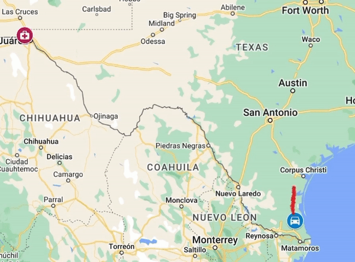

Last month, Florida Governor Ron DeSantis signed, in aggreeance with the majority of the state's legislature, a ban on abortion at the 6-week mark.
Commonly known as a "heartbeat bill," this legislation is extremely similar to that of 12 other U.S. states, which have similarly made abortion illegal once a heartbeat is detected.
But the bill's effects don't stop along Florida's borders. For the last several years, the state has been considered some sort of abortion haven in the South, as it has been one of the last to apply this stringent of restriction on reproductive care.
Data from the Meyers Abortion Database show that 82 counties from bordering states rely on clinics in Florida as their nearest abortion-providing clinic. This includes residents as far as Hardin County, Texas, which is approximately 638 miles from its nearest clinic in Tallahassee, Florida.
Traveling for reproductive care doesn't seem to be anything new for Texans.
The Texas state legislature passed its own heartbeat bill in 2021. Since then access has been even more limited, as Texas was one of several 'trigger ban' states that made abortion illegal with no exceptions for rape or incest following the Dobbs decision by the Supreme Court last summer.
One Texas county in particular, Willacy County, has the greatests distance to an abortion-providing facility out of all U.S. counties per the Meyers Abortion Database. Individuals seeking an abortion here must travel just under 800 miles to a clinic in Dona Ana County, New Mexico: a 12 hour journey by car.

Abortion access state by state -- any by region -- continues to vary as bills like those in Florida are passed. In December 2022, southern states in particular had counties with the furthest average distance to an abortion-providing clinic. States in the Northeast had the shortest distances on average, with several states having an average distance under 10 miles.
Most "heartbeat bills" and trigger laws affected residents in the last several years. In 2009, things were much different. While several states in the midwest has limited access to reproductive care that has only slightly shifted since then, states in the South had significantly greater accessibility.